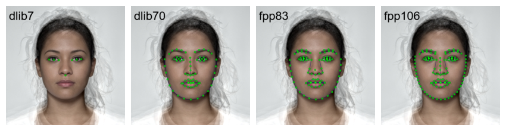
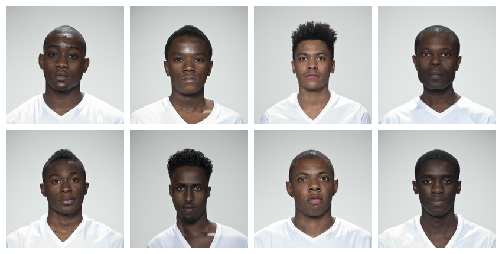
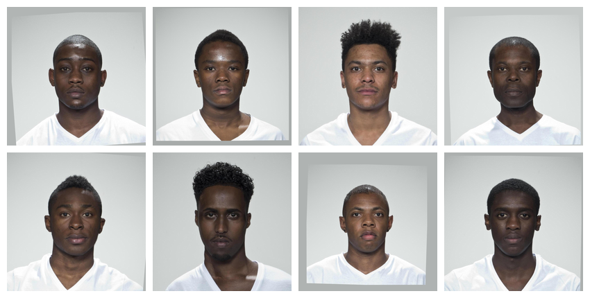
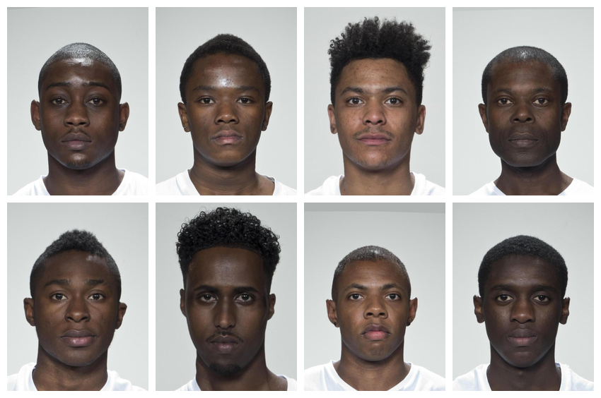
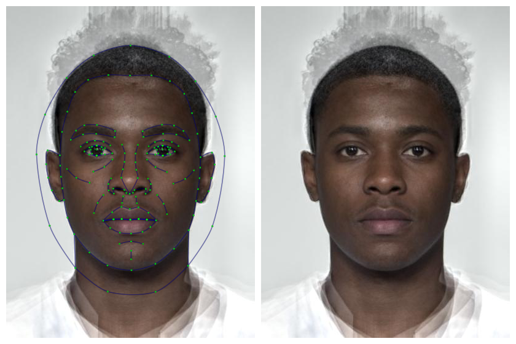
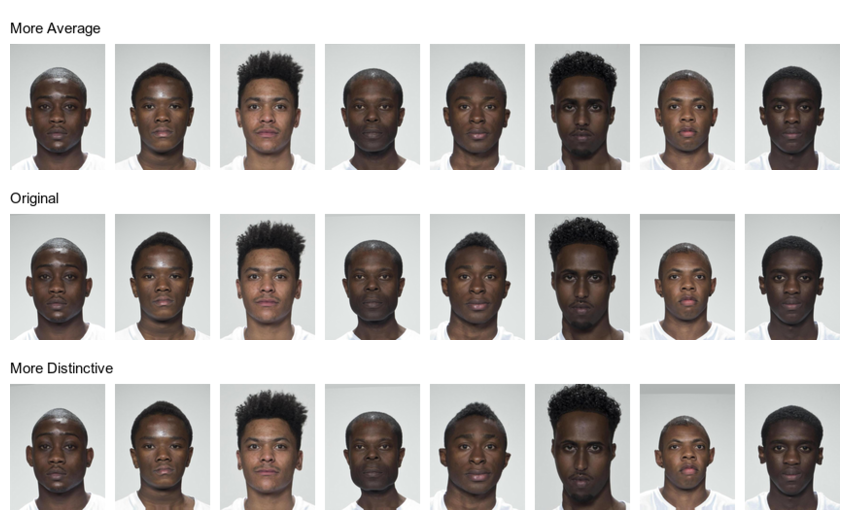
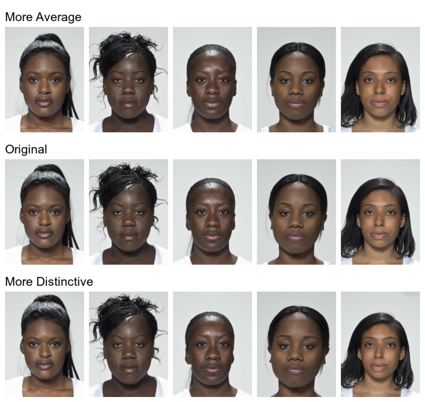
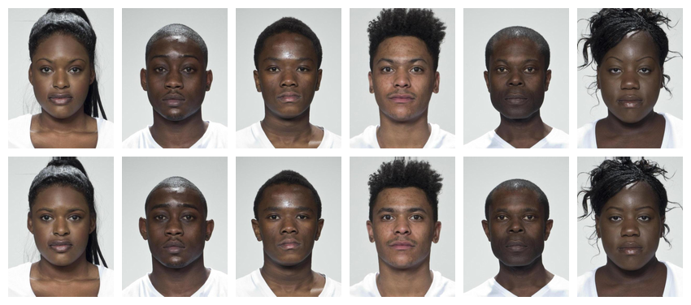
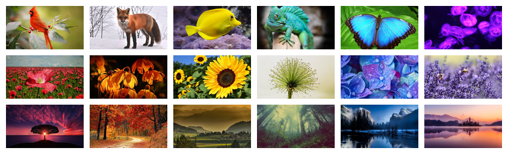
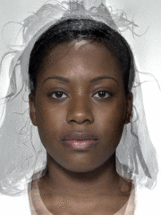

This vignette will show some recipes for common types of stimulus creation.
Automatic Delineation
If your images aren’t delineated, you can use the auto_delin() function or upload them to webmorph to use the extensive manual delineation functions there and the 189-point FRL template.
The auto-delineation has three options. The default is “dlib74”, which is a 74-point template used by dlib with the python package face_recognition.
Auto-delineation with web-based software Face++ is better, but requires a free API key from Face++. After signing up for an account, go to https://console.faceplusplus.com/app/apikey/list and request a free API key. Add the key and secret to your .Renviron file as follows:
FACEPLUSPLUS_KEY="1234567890abcdefghijk"
FACEPLUSPLUS_SECRET="1234567890abcdefghijk"The you can access the 106-point (fpp106) and 83-point (fpp83) templates. Remember, this uploads your images to the Face++ website.
frl <- demo_stim("test", "f_multi")
dlib74 <- auto_delin(frl, "dlib74", replace = TRUE)
fpp83 <- auto_delin(frl, "fpp83", replace = TRUE)
fpp106 <- auto_delin(frl, "fpp106", replace = TRUE)
Averageness
Let’s start with a set of images from the built-in image sets. You can add data to an image set to use in subsetting the images. For demonstration, the London image set from the package stimsets has a data table called london_info.
stimuli <- demo_stim("london") %>%
add_info(stimsets::london_info)Select images from your subset to make a new image set. the original images are large, and we don’t need the resulting stimuli to be that large, so we’ll reduce image size by 50% right at the start to reduce processing time.

Next, align the images using Procrustes normalisation to the position of the first image. They need to have templates fitted to do this. The argument patch = TRUE tries to match the background colour as closely as possible.
The horiz_eyes function just makes sure that the first image has good alignment, since his head is slightly tilted.
aligned <- subset %>%
horiz_eyes(patch = TRUE) %>%
align(procrustes = TRUE, patch = TRUE)
You may also want to crop the images to a 3x4 aspect ratio.
cropped <- crop(aligned, width = 0.6, height = 0.8)
Now we can make an average version of these faces. This uses the morphing functions available on the web app, so you need to have an internet connection. It usually takes 1-4 seconds per image to upload your images to the server for processing.
avg <- avg(cropped)
You can use this average face to transform the individual faces in distinctiveness and averageness.
transf <- trans(trans_img = cropped,
from_img = avg,
to_img = cropped,
shape = c(avg = -0.5, dist = 0.5))
Now you can set names and save your individual stimuli in a directory to use in studies.
avg %>% write_stim("stimuli", "m_avg", "jpg")
cropped %>%
setnames(pattern = "_03", replacement = "", prefix = "orig_") %>%
write_stim("stimuli", format = "jpg")
transf %>%
setnames(pattern = "_03", replacement = "") %>%
write_stim("stimuli", format = "jpg")Now you can pipe all of the commands together and apply them to a new set of images, such as all the black women in the set.
# subset, resize, align, and crop
cropped <- stimuli %>%
subset(face_gender == "female") %>%
subset(face_eth == "black") %>%
resize(.5) %>%
horiz_eyes(patch = TRUE) %>%
align(procrustes = TRUE, patch = TRUE) %>%
crop(width = 0.6, height = 0.8)
# average
avg <- avg(cropped)
# transform
transf <- trans(trans_img = cropped,
from_img = avg,
to_img = cropped,
shape = c(avg = -0.5, dist = 0.5))
# save
avg %>% write_stim("stimuli", "f_avg", "jpg")
cropped %>%
setnames(pattern = "_03", replacement = "", prefix = "orig_") %>%
write_stim("stimuli", format = "jpg")
transf %>%
setnames(pattern = "_03", replacement = "") %>%
write_stim("stimuli", format = "jpg")
avg_i <- seq(1, 10, 2)
dist_i <- seq(2, 10, 2)
plot_rows(
"More Average" = transf[avg_i],
"Original" = cropped,
"More Distinctive" = transf[dist_i],
top_label = TRUE
)
Sexual Dimorphism
To manipulate sexual dimorphism, you need male and female average faces like the ones created above. We’ll load them from the saved files.
You can then transform them by -50% to feminise and +50% to masculinise. Remember to give your shape vector names to set the output names automatically.
sexdim <- trans(trans_img = orig[1:6],
from_img = avgs$f_avg,
to_img = avgs$m_avg,
shape = c(fem = -0.5, masc = 0.5))
Animate
Make a continuum that morphs from the female to the male average in 5% steps.
continuum <- continuum(avgs$f_avg, avgs$m_avg, 0, 1, .05)
plot(continuum, nrow = 3)
You can turn your images into an animated gif. Resize the images to the size you want first.

Non-Face Stimuli
You can also process images without templates. For example, the following code takes a group of images and crops them to a standard size.
# load rainbow images
stimuli <- demo_stim("rainbow")
# get info on the images to put in order by type and colour
info <- system.file("rainbow/_info.csv", package = "stimsets") %>%
readr::read_csv() %>%
dplyr::mutate(colour = factor(colour, c("red", "orange", "yellow", "green", "blue", "purple"))) %>%
dplyr::arrange(type, colour)
# crop to smallest size
width <- width(stimuli) %>% min()
height <- height(stimuli) %>% min()
stim <- crop(stimuli, width, height) %>%
`[`(info$photo_name) # reorder by type and colour
plot(stim, ncol = 6)Word Stimuli
Make word stimuli by starting with blank images. You can specify the size and colour.
new_stimuli <- blank(n = 6, width = 100, height = 100,
color = c("red", "orange", "yellow", "green", "blue", "purple"))Then you can add words to each stimulus with the label() function.
colours <- c(red = "red",
orange = "darkorange",
green = "darkgreen",
blue = "blue",
purple = "purple")
n <- length(colours)
labels <- rep(names(colours), each = n)
stroop <- blank(n*n, 400, 100) %>%
label(labels, size = 50, color = colours,
gravity = "center")
This script took 0.9 minutes to render all the included images from scratch.